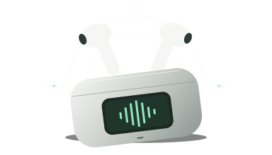

FEITO PARA O AI FRIEND PRO
Seu fone,
em detalhe.
Conecte pelo Chrome, teste os modos na caixinha e leve o diagnóstico para a nossa conversa.
Você escolhe quando compartilhar.
Vamos conectar.
BLUETOOTH LERetire os fones da caixa, ligue o Bluetooth do celular e deixe a telinha acesa.
Use o Chrome no A56, com este site aberto por HTTPS.
Meu fone não aparece
Desconecte o fone do notebook e tente de novo com a caixinha aberta e a tela ligada. A entrada de áudio Bluetooth pode não aparecer na lista BLE do Chrome.
Se houver uma entrada separada para a caixinha, você também pode testá-la.
Opções avançadas
O site começa pelos serviços de bateria e informações do dispositivo. Para outros serviços, adicione seus UUIDs ou importe um relatório do APK.
Selecione o fone novamente depois de alterar os UUIDs.
Sua conexão
EM ESPERA
AI FRIEND PRO / DIAGNÓSTICOConecte para começar a examinar.
Pronto para começar.
Serviços encontrados
Os serviços autorizados aparecerão após o diagnóstico.
Teste na caixinha.
Altere um modo na telinha. Depois, toque abaixo para registrar o que você fez.
Estes botões são marcadores do teste. A mudança de modo é feita na caixinha. Espere alguns segundos entre as mudanças.
Pronto para investigar.
Baixe o relatório e anexe nesta conversa. Os dados ajudam a investigar os comandos do seu fone, mesmo se o teste ficou incompleto.
Sem envio automático. Só você decide compartilhar.
O que aconteceu
0 eventos- O registro começa quando você conecta seu fone.
O que o navegador consegue examinar?
O teste acessa serviços Bluetooth LE autorizados pelo Chrome. Não examina a conexão de áudio Bluetooth clássica nem intercepta a comunicação entre caixa e fones. Nenhum serviço encontrado não significa que o aparelho não tenha outras interfaces.
Esta é uma ferramenta de diagnóstico. Os controles remotos dependem de identificar e validar os comandos específicos do fone.